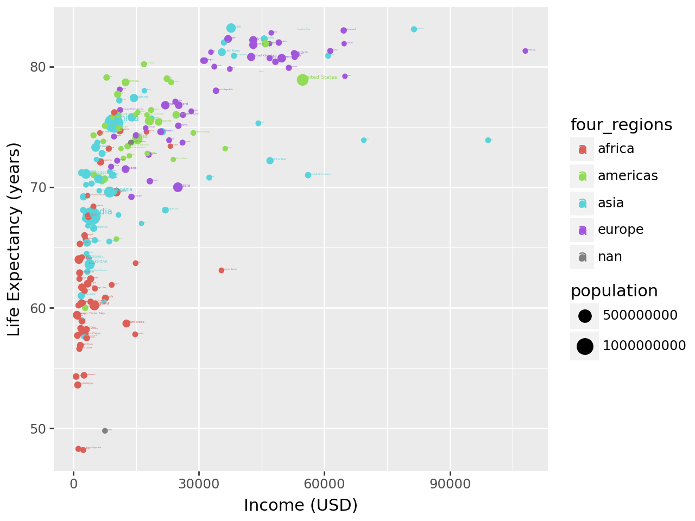
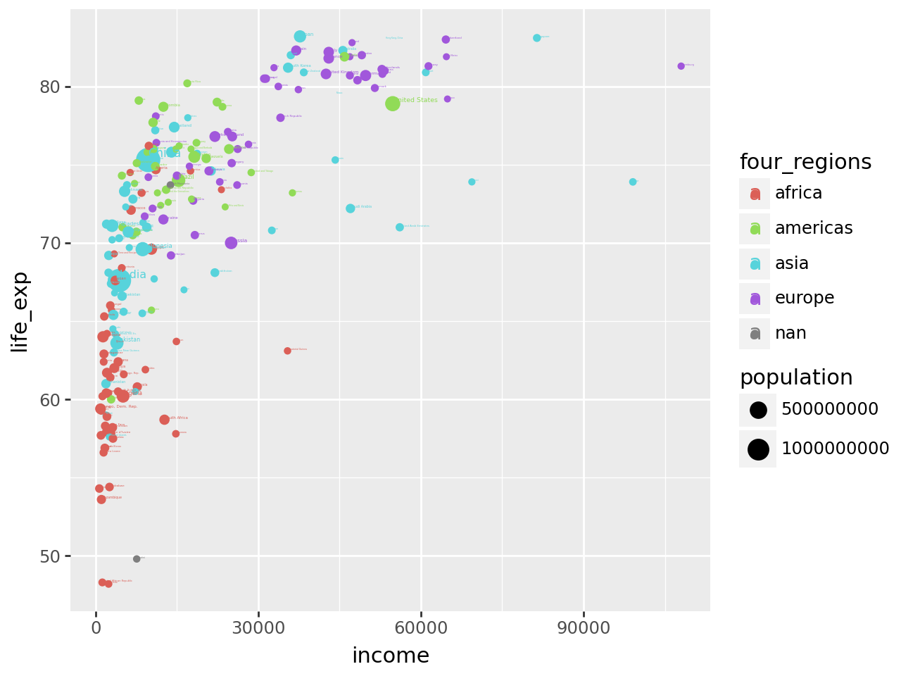

Code
import pandas as pd###Exercises
import pandas as pdq1_data = pd.read_csv("C:/Users/hblin/OneDrive - Cal Poly/GSB 544/Lab_1_data/q1data.csv")
print(q1_data.head()) income life_exp population year country four_regions \
0 1910.0 61.0 29200000.0 2010 Afghanistan asia
1 11100.0 78.1 2950000.0 2010 Albania europe
2 11100.0 74.7 36000000.0 2010 Algeria africa
3 46900.0 81.9 84500.0 2010 Andorra europe
4 7680.0 60.8 23400000.0 2010 Angola africa
six_regions eight_regions world_bank_region
0 south_asia asia_west South Asia
1 europe_central_asia europe_east Europe & Central Asia
2 middle_east_north_africa africa_north Middle East & North Africa
3 europe_central_asia europe_west Europe & Central Asia
4 sub_saharan_africa africa_sub_saharan Sub-Saharan Africa q2_data = pd.read_csv("C:/Users/hblin/OneDrive - Cal Poly/GSB 544/Lab_1_data/q2data.csv")q3_data = pd.read_csv("C:/Users/hblin/OneDrive - Cal Poly/GSB 544/Lab_1_data/q3data.csv")###Task 1
import plotnine as plt
from plotnine import ggplot, geom_point, aes, geom_text, theme, labsyear = 2010
q1_data_filtered = q1_data[q1_data["year"] == year]
print(q1_data_filtered) income life_exp population year country four_regions \
0 1910.0 61.0 29200000.0 2010 Afghanistan asia
1 11100.0 78.1 2950000.0 2010 Albania europe
2 11100.0 74.7 36000000.0 2010 Algeria africa
3 46900.0 81.9 84500.0 2010 Andorra europe
4 7680.0 60.8 23400000.0 2010 Angola africa
.. ... ... ... ... ... ...
192 20400.0 75.4 28400000.0 2010 Venezuela americas
193 5350.0 73.3 88000000.0 2010 Vietnam asia
194 4700.0 67.8 23200000.0 2010 Yemen asia
195 3200.0 57.5 13600000.0 2010 Zambia africa
196 2560.0 54.4 12700000.0 2010 Zimbabwe africa
six_regions eight_regions world_bank_region
0 south_asia asia_west South Asia
1 europe_central_asia europe_east Europe & Central Asia
2 middle_east_north_africa africa_north Middle East & North Africa
3 europe_central_asia europe_west Europe & Central Asia
4 sub_saharan_africa africa_sub_saharan Sub-Saharan Africa
.. ... ... ...
192 america america_south Latin America & Caribbean
193 east_asia_pacific east_asia_pacific East Asia & Pacific
194 middle_east_north_africa asia_west Middle East & North Africa
195 sub_saharan_africa africa_sub_saharan Sub-Saharan Africa
196 sub_saharan_africa africa_sub_saharan Sub-Saharan Africa
[197 rows x 9 columns](ggplot(q1_data_filtered,
aes(
x = "income",
y = "life_exp",
color = "four_regions",
size = "population",
label = "country"
))
+ geom_point()
+ geom_text(ha='left', va='bottom')
+ labs(x="Income (USD)", y="Life Expectancy (years)")
)c:\Users\hblin\AppData\Local\Programs\Python\Python312\Lib\site-packages\plotnine\layer.py:364: PlotnineWarning: geom_point : Removed 4 rows containing missing values.
c:\Users\hblin\AppData\Local\Programs\Python\Python312\Lib\site-packages\plotnine\layer.py:364: PlotnineWarning: geom_text : Removed 2 rows containing missing values.
(ggplot(q1_data,
aes(
x = "income",
y = "life_exp",
color = "four_regions",
size = "population",
label = "country"
))
+ geom_point()
+ geom_text(ha='left', va='bottom')
)c:\Users\hblin\AppData\Local\Programs\Python\Python312\Lib\site-packages\plotnine\layer.py:364: PlotnineWarning: geom_point : Removed 4 rows containing missing values.
c:\Users\hblin\AppData\Local\Programs\Python\Python312\Lib\site-packages\plotnine\layer.py:364: PlotnineWarning: geom_text : Removed 2 rows containing missing values.